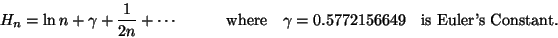

Consider the diagram in Fig 1.8. By adding up the areas of the rectangles that lie above the graph we get
If you are interested, a better estimate is

A proof, together with much more information is available in (Graham et al., 1988, Page 264). Don't take the title of this book at its face value: ``Concrete'' Mathematics is a blend of Continuous and discrete mathematics, chosen to be of interest and relevance to this type of calculation!Now we can go back to our study of the timing of our algorithm. Recall that we obtained a formula for the average running time of the algorithm which could now be written as
| T(n) | = | 3(n - 1) + 2 + |
|
| = | 3n + Hn - 2, | ||
| 3n + ln n. |
Where the approximation is meant to be applied if n is quite large. This is interesting. Let me put some values down in a table:
So you see that, on average, there are really very few detours indeed. For a value of n like 10000 the detours only make up, on average, 0.03% of the time taken by the algorithm.
This shows a phenomenon that you need to get clear in your mind at an early stage: the logarithm function grows very slowly indeed.